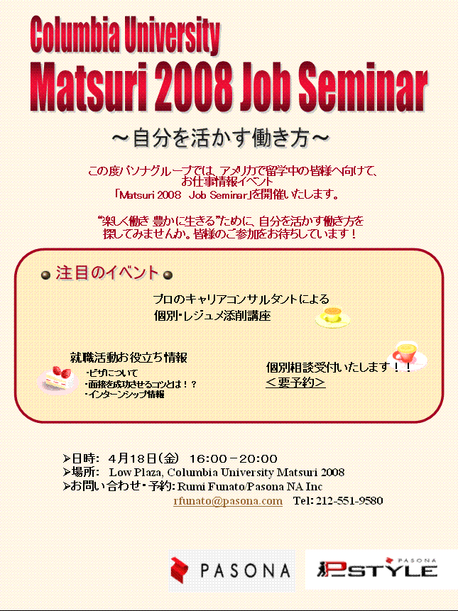
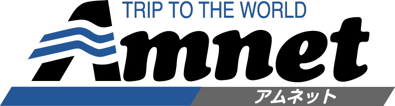

-
Sponsors
This whole event is possible only because of the generous help offered to us by the following organizations. These organizations are not just generous to us, but are generous to any who are looking for resources into Japan or Japanese related activites in New York City. So please, check our their website and their activities!
-
American Airlines
We are very excited to announce that American Airlines will be providing CJS with a free pair of tickets to anywhere in the Continental United States and Caribbeans/Bahamas/Bermuda/Canada/Mexico. Enter our absolutely free raffle and get a chance to win the tickets!

-
PASONA
PASONA will be holding informational sessions on writing resumes in Japanese. They are also offering us generous financial support for this event. Thank you!
-
@TABIT
@TABIT is providing CJS with 2 pair tickets to Mets vs Mariners game on 6/23! Win it through our raffle! We also thank @TABIT for their financial support of this event.

-
Go Go Travel
Go Go Travel will be serving the 2kg curry for our eating competition on stage! Also, they are giving us a free ticket to see a Yankees game!
-
Mainichi Communications USA
We thank Mainichi Communications USA for their generous financial support
-
Amnet
We thank Amnet for running the Yo-Yo Fishing booth. It looks like a lot of fun!
 -
Ito En
Ito En has generously donated all volunteers with a free can of tea.

-
New York Japanese Student Association
We thank NYJSA for their cooperation in advertising our event!
-
New York University's Japan International
We also thank JI for their cooperation in advertising over at NYU!
-